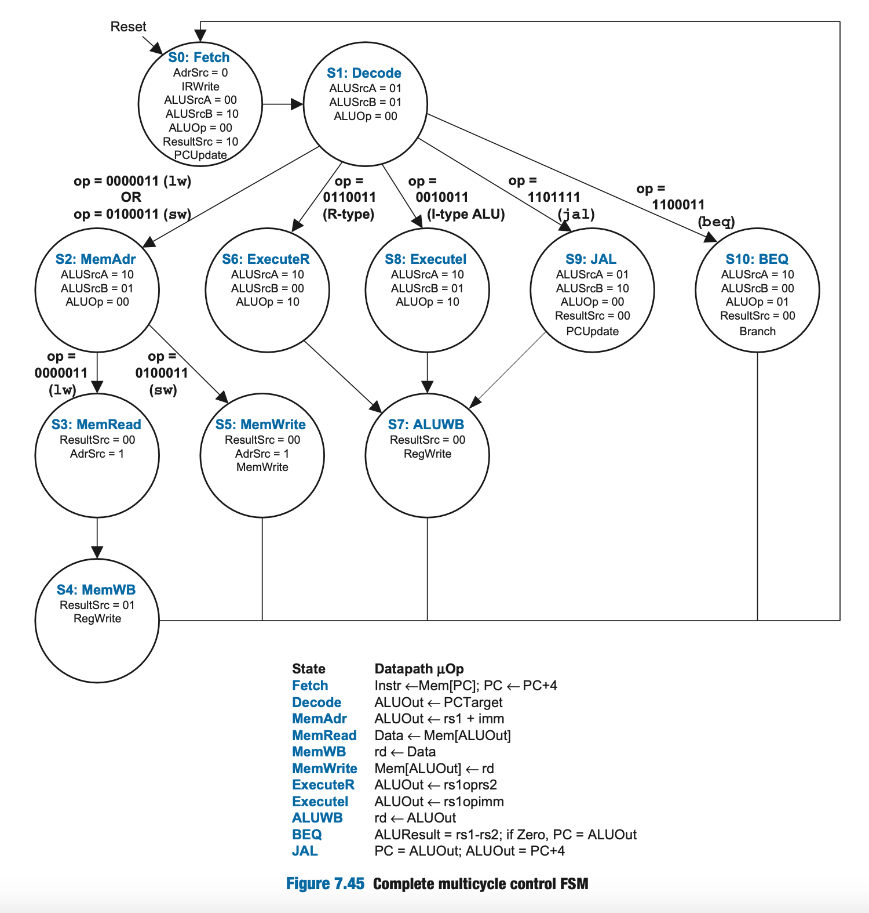

CS 21 26.1 Lab 5 Walkthrough
Muti Cycle Processor in Logisim
Overview
In the lecture, we have derived the Multi Cycle Processor Datapath. You will be using Logisim to modify an existing multicycle RISC-V processor implementation to support other kinds of instructions.
Ripes version
For uniformity, use the https://ripes.upd-dcs.work instead of a locally installed RIPES.
General Instructions
For this laboratory activity, you are to work on:
- Two Checkpoint Items (due by the end of the lab period)
- Two Take-Home Items (due before the next lab meeting)
Relevant Links
- Ripes Fork: https://ripes.upd-dcs.work
- Lab 5 Logisim Template: https://drive.google.com/file/d/1lFRU2wb9Ypbz4tH-AI0bqT_M0WGh1nil/view?usp=sharing
Tip: Quick conversion shell script
Recall from Lab 4, you learned how to generate a logisim.txt file that you can upload as an image into the instruction memory in Logisim. After copying the assembly version of your code from the Ripes simulator and saving it in assembly.txt, the following command automatically transforms the said output into its Logisim-ready form in logisim.txt:
Guided Walkthrough
Overview
Download the Lab 5 Logisim Template using the link above. This file should contain a multicylce processor implementation that supports the following instructions:
lwswaddsubandorsltaddibeqjal
Note that the ALU is incomplete, causing R-type and I-type instructions not listed above to yield incorrect results.
Walkthrough #1: Testing a simple R-type Instruction
To help you get familiarized with the processor, let's try running a simple add x4, x1, x2 instruction. To see the effects of running this instruction, it is helpful to assign non-zero values to some of the registers.
-
Open the Register file and change the value of the following registers:
x1 = 00000001x2 = 00000002x3 = 00000003
-
Load the
add x4, x1, x2instruction in hex (0x00208233) to the instruction memory -
Go back to the
mcpfullmain component and verify that the processor is still atState 0or theFetchstage (without ticking the clock, the processor by default starts at theFetchstage). The state number is labeled asSTATEjust below the control unit. Verify that the control signals are correct according toState 0of the FSM of the MCP Control Signals.
Volatile memory
Unlike the single-cycle processor in the previous lab, the memory component is set as volatile– everytime you reset the simulation, the entire address space (which includes loaded instructions) is also reset to zero.
This is done to ensure modifications to other parts of memory (e.g., stack memory) do not persist through resets as this may make debugging harder.

-
Manually tick the clock at the lower left hand side of the circuit. Make sure that you tick once only. This should change the state of the processor to
State 1. -
Observe and verify that the changes of the control signals follow the control signals as the states change in this manner after
State 1>State 6>State 7> `State 0 -
After executing the
addinstruction, verify that the changes to the register file is correct.
Waltkthrough #2: Adding a Hypothetical jal8 instruction
We will now add microarchitecture support for a hypothetical jal8 instruction.
jal8 is a hypothetical instruction that works like jal, but stores PC + 8 instead of PC + 4. In other words, it has the following parallel goals:
REG[rd] = PC + 8PC = PC + SignExt(imm)
Assume that executing jal8 starts by performing Fetch and Decode. As such, we can assume that the architectural and nonarchitectural states of the multicycle processor are then as follows:
OldPC = PCPC = PC + 4A = REG[rs1]B = REG[rs2]ALUOut = PC + SignExt(imm)
There are several ways to achieve the goals of jal8 from here, with varying degrees of modification to the datapath and control.
The approach described below adds a new control state JAL8 which is intended to follow after Decode if the instruction is a jal8.
Designing a new JAL8 control state
Since ALUOut already contains PC + SignExt(imm) after Decode, JAL8 can simply set it as the value of PC to achieve the PC = PC + SignExt(imm) goal.
In particular, the following control signals must be set:
ResultSrc = 00so thatALUOutis the output of theResultmultiplexerPCWrite = 1so thatPCis updated with the output of theResultmultiplexer after the next triggering edge
This leaves the REG[rd] = PC + 8 goal which involves writing to the register file. Recall that PC here refers to the original PC value, which is stored in OldPC as PC is now PC + 4 (i.e., PC = OrigPC + 4).
Since the ALU is still unused in the JAL8 state, we can compute PC + 8 (or more precisely, OrigPC + 4 + 4) in parallel via the following control signals:
ALUSrcA = 00so thatPCis the first ALU operand (which containsOrigPC + 4at this point)ALUSrcB = 10so that4is the second ALU operandALUOp = 00so thatALUControlis set to000(addition)
The only step left is to write this sum to REG[rd].
Recall that:
- We have already set the
Resultmultiplexer to outputALUOutviaResultSrc = 00 - The
WD3port of the register file (which dictates the value to be written) is also connected to the output of theResultmultiplexer - Our remaining goal is to write
PC + 8toREG[rd]
Given the above, we will be unable to write PC + 8 to REG[rd] in parallel with writing OldPC + SignExt(imm) to PC.
While we can move the execution of REG[rd] = PC + 8 to another new state after JAL8, recall that:
ALUOutautomatically saves the result of the ALU computation of the previous cycle- The existing
ALUWBoperation performsREG[rd] = ALUOut
As such, doing PC + 8 during the JAL8 cycle will allow us to perform REG[rd] = PC + 8 by doing ALUWB after.
In summary, the new JAL8 control state sets the following control signals:
ResultSrc = 00PCWrite = 1ALUSrcA = 00ALUSrcB = 10ALUOp = 00RegWrite = 0(since the register file must not yet be written to)MemWrite = 0(since memory must not be written to)IRWrite = 0(sinceInstrandOldPCmust not be updated)
Doing so results in the following state changes:
PC = OldPC + SignExt(imm)ALUOut = OrigPC + 8
jal8 can thus be handled using the following four-cycle sequence:
| Cycle | Operation | Resulting state after triggering edge |
|---|---|---|
| 1 | Fetch |
PC = OrigPC + 4OldPC = OrigPCInstr = MEM[OrigPC]A = 💩B = 💩ALUOut = 💩REG[rd] = 💩 |
| 2 | Decode |
PC = OrigPC + 4OldPC = OrigPCInstr = MEM[OrigPC]A = REG[rs1]B = REG[rs2]ALUOut = OrigPC + SignExt(imm)REG[rd] = 💩 |
| 3 | JAL8 |
PC = OrigPC + SignExt(imm)OldPC = OrigPCInstr = MEM[OrigPC]A = REG[rs1]B = REG[rs2]ALUOut = PC + 8REG[rd] = 💩 |
| 4 | ALUWB |
PC = OrigPC + SignExt(imm)OldPC = OrigPCInstr = MEM[OrigPC]A = REG[rs1]B = REG[rs2]ALUOut = 💩REG[rd] = OrigPC + 8 |
Implementing the new state
Before implementing new JAL8 state, we first have to assign a state value to it. Since S0 up to S10 are already used, we can use S11.
To implement the new JAL8 state, follow these steps:
-
Open the
controlunitimplementation. Verify that the following subcircuits are present: -
maindecoder– Moore circuit computing almost all of the control signals nextstatelogic– Combinational circuit controlling state transitionsaludecoder– Combinational circuit computingALUControlinstrdecoder– Combinational circuit computingImmSrc
Of the subcircuits listed, only the ALU decoder does not need to be modified for JAL8 as there were no changes made to the operation of the ALU.
Main Decoder Open up maindecoder and verify that you can see how each control signal is computed using only the current state.
Do now!
Assuming that the current state is Decode (S1 or 0001), identify the values emitted by maindecoder for the following based on its Logisim implementation:
PCUpdateBranchMemWriteIRWriteRegWriteAdrSrcALUSrcAALUSrcBALUOpResultSrc
Note that floating values (i.e., U) are taken to be don't cares (i.e., X).
Recall that our new JAL8 state is assigned to S11 and that it must set the following control signals as follows:
ResultSrc = 00PCWrite = 1ALUSrcA = 00ALUSrcB = 10ALUOp = 00RegWrite = 0MemWrite = 0IRWrite = 0
Recall that PCWrite is indirectly influenced by maindecoder via the PCUpdate and Branch control signals (where PCWrite = PCUpdate | (Branch & Zero)). Since PCWrite must always be 1 for JAL8, it should set PCUpdate to 1.
Do now!
For each control signal computed in maindecoder, locate its input port labeled "input 11" (corresponding to S11), then add a Constant component corresponding to the value JAL8 is supposed to set the said control signal to.
Ensure that the existing connections are kept intact.
To verify your implementation, you may use the Poke tool to manually set the individual bits of the State input and confirm that the outputs shown are as intended.
Next State Logic. Open up the nextstatelogic and examine how NextState is being computed from the current state and the current instruction.
Do now!
Recall that S1 (Decode) has the following next state transitions:
S2 (MemAddr)if current instruction islworswS6 (ExecuteR)if current instruction islworswS8 (ExecuteI)if current instruction is an I-type ALUS9 (JAL)if current instruction isjalS10 (BEQ)if current instruction isbeq
Ensure that you understand how a priority encoder is used to determine which kind of instruction is being executed.
Verify that the implementation for NextS1 is consistent with the state transitions listed above for S1 (Decode).
Verify as well that the implementation for NextState ensures that NextS1 will be selected when the current state is S1 (Decode).
Recall that we want the JAL8 state to come after the Decode state, but only when executing the JAL8 instruction, and that we want ALUWB to come after JAL8.
To do this, we need to be able to detect that the current instruction being executed is JAL8. We will define JAL8 as having an opcode of 0b1101110 or 0x6e.
Do now!
To make S1 (Decode) transition to S11 (JAL8) when the current instruction is JAL8, do the following:
-
Add a new comparator that compares the
opcode(using a tunnel) and0010111(as a constant), then set the equality result to a newIsJAL8tunnel -
Add another
IsJAL8tunnel to "Input 6" of the priority encoder used to generateSelector -
Set the value of the "Input 6" port of the multiplexer computing
NextS1tob(corresponding toS11 (JAL8))
To make S11 (JAL8) transition to S7 (ALUWB) regardless of the current instruction, do the following:
-
Create a new tunnel
NextS11and set its input to7(corresponding toS7 (ALUWB)) -
Connect another
NextS11tunnel to the "Input 11" port of the multiplexer computingNextState
Ensure you understand the reason why each step was done.
Instruction decoder and extend unit. Recall that the instruction decoder is in charge of computing ImmSrc, which is used by the extend unit to determine how the immediate value will be constructed from the instruction bits. Also, recall that J-type instructions correspond to ImmSrc = 011. Open up instrdecoder and verify that the instruction detection logic is similar to that of nextstatelogic.
Do now!
Add a comparator and IsJAL8 tunnels similar to the previous section, then set the value of "Input 6" port of the multiplexer computing ImmSrc to 3 (which corresponds to 0b011).
Verification. The changes in the earlier sections should be enough for the multicycle processor to properly execute the jal8 instruction.
To check whether you have implemented jal8 correctly, you may use this simple test program:
add x0, x0, x0 # 0: 00000033
jal8 x1, 12 # 4: 00c000ee
add x1, x1, x1 # 8: 001080b3
add x1, x1, x1 # c: 001080b3
add x0, x0, x0 # 10: 00000033
After execution of the test program, x1 is expected to have a value of 0xc with all other general-purpose registers equal to 0x0.
Notice that the bottom part of the control unit in mcpfull shows the current state for tracing purposes. You may use this to verify that all state transitions are as intended.
Do now!
Enter the corresponding machine instructions in the memory of the multicycle processor, then tick the clock until it says 12 ticks (or when the stated PC value is 0x14).
Verify that the register values shown in the State tab of Logisim are consistent with the register values shown above.
Verification of existing instructions
The test above does not verify whether the other supported instructions still work as intended.
You are strongly encouraged to make a more comprehensive test program that involves lw, sw, add, sub, and, or, slt, addi, beq, and jal.